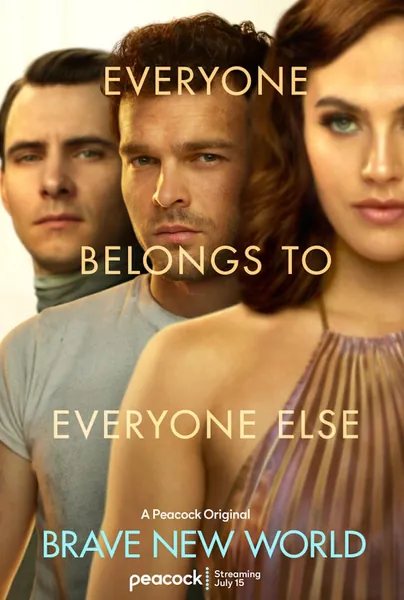

Дивный новый мир
Brave New World
2020
Драма, Фантастика
Экранизация антиутопии Хаксли: в «Новом мире» нет ни боли, ни старения, ни жестких правил в отношениях — людей выращивают в колбах, а при малейшей тревоге выдают «сому». Бернард и Линина отправляются в «Резервацию», где люди по-прежнему живут по старинке — с болью, браком и историей, — и сталкиваются с суровой реальностью, которая оказывается им не по зубам. Сериал получился мягче книги, но суть осталась прежней: счастье по рецепту — это тоже способ контроля. Задолго до появления «успокаивающих лент новостей» Хаксли точно описал, как это работает.
Описание на английском
An adaptation of Huxley's dystopia: the New World has no pain, no aging, no sex with rules — castes are made in bottles, and 'soma' is handed out for any anxiety. Bernard and Lenina visit the Reservation, where people still live the old way — with pain, marriage and history — and break against that reality. The series is softer than the book, but the core holds: happiness on prescription is also a form of control. Long before 'soothing feeds', Huxley described exactly how that works.